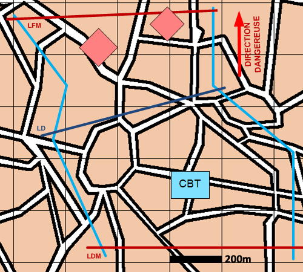

NIVEAU :Automate
ARME :Melee
MISSION :Attaquer
Objectif principal
- Occuper
- Détruire / Neutraliser
Modalités d'exécution
-
Progresser dans le fuseau jusqu'à la ligne de débouché :
- Echelon d'éclairage éclaire jusqu'à la LD ;
- GEN en appui mobilité.
-
Déboucher sur ordre de conduite.
-
Progresser au-delà de la ligne de débouché en infligeant le plus de pertes possibles aux ENIs.
-
Tomber en garde.
Pour attaquer une zone ou un bloc urbain, se référer à la mission "S'Emparer De" ;
Pour attaquer des unités spécifiques, se référer aux missions "Détruire" ou "Neutraliser".
Schéma de modélisation

Paramètres obligatoires
Fuseau : Zone dans laquelle progresser pour mener l'attaque.
Direction Dangereuse : Orientation privilégiée des capteurs.
Ligne de débouché : Ligne à partir de laquelle les unités vont attaquer.
Paramètres optionnels
Ligne(s) de coordination [LC]
Ligne de début et fin de mission [LDM/LFM]
Nombre d'échelons (2 par défaut)